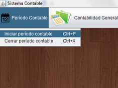
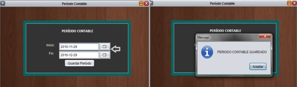
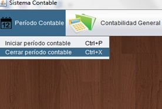

En la opción Período Contable podremos establecer el período contable de la empresa, para ello debemos seleccionar el menú y luego seleccionar la opción Iniciar período contable

Nos aparecerá una ventana como la siguiente, en la cual estableceremos el período contable de la empresa, seleccionando en el calendario su fecha de inicio y su fecha de fin, luego dar clic en el botón guardar período y listo.

Cuando se haya cumplido la fecha fin del período contable que se ha seleccionado,se selecciona igualmente el menú Período Contable solo que ahora damos clic sobre la opción Cerrar Período Contable, luego de ello aparecerán habilitadas las opciones que realizan en el cierre del período.
